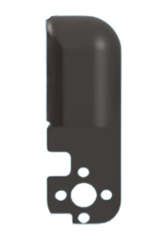
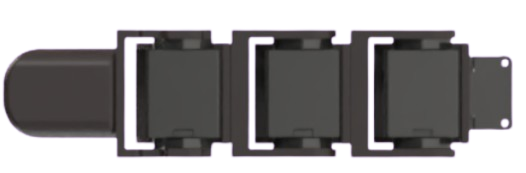
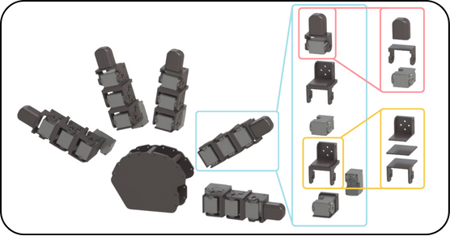
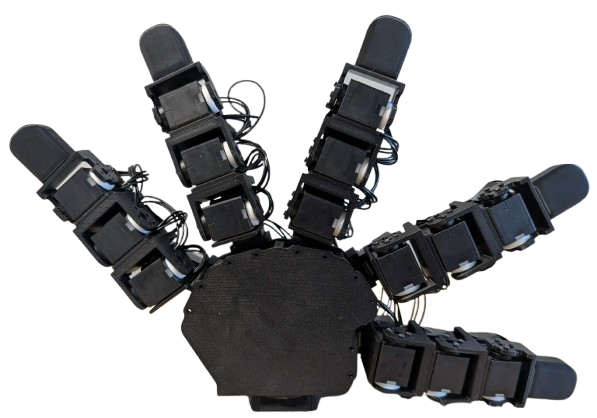

House of Dextra: Build Guide
Build multiple hand variants from one platform. Customizable: palm geometry, finger placement, link lengths, fingertip shape, degrees of freedom, and finger count. STL files, SolidWorks parts, and control code on GitHub.

3-finger variant

4-finger variant

5-finger variant
Bill of Materials
Everything needed for the 5-finger baseline. Scale servo count down for fewer fingers: 16 for 4-finger, 12 for 3-finger. Order the full Dynamixel bundle here ↗
| Item | Qty | Price | Link |
|---|---|---|---|
| Robot Cable X3P 180mm (10 pcs) | 1 | $38.42 | Robotis ↗ |
| 3P JST Expansion Board | 2 | $13.80 | Robotis ↗ |
| Dynamixel XL330-M288-T Servo Motors | 20 | $549.80 | Robotis ↗ |
| U2D2 Power Hub Board Set | 1 | $21.85 | Robotis ↗ |
| U2D2 Communication Board | 1 | $36.92 | Robotis ↗ |
| 12V Power Supply | 1 | $16.49 | Amazon ↗ |
| Black PLA Filament | 1 | $22.99 | Bambu Lab ↗ |
| USB 3.0 Cable | 1 | ~$5 | Any |
| Total | $700.27 |
Additional tools: electrical tape, screwdriver kit, micro cutters (~$31). A 3D printer is required.
Optional: HN-X330-N101 servo horns for extra-sturdy joints. One side can be left free-floating with the printed Idler spacer.
Print Guide
Use PLA Basic with auto tree branching supports enabled. All STLs and SolidWorks source files are on GitHub.
- 1Palm
- 5Fingertips
- 15Servo Holders (connecting finger joints)
- 5Lever Holders (mounting fingers to palm)
- 15Servo Washers, Large
- 15Servo Washers, Small
In your slicer: select PLA Basic, enable tree (auto) supports at ~30° threshold. Remove supports with micro cutters before assembly.
Each component bolts together with four bolts or fewer. Daisy-chain up to 6 motors per finger; supports up to 6 fingers. Add another expansion board for up to 10.



Left: fingertip. Center: single finger servo chain. Right: mechanical linkages (alter middle slab for custom lengths).

5-finger expansion: modular part breakdown
Assembly
Five fingers are assembled identically, then mounted to the palm. The process is the same for any hand variant.
-
00
Print all STLs
Print all parts from the Print Guide. Remove supports with micro cutters. Have all parts, servos, cables, and bolts ready before starting.
-
01
Mount the base servo
Connect one servo motor vertically to the L-shaped servo holder. This is the abduction motor that attaches the finger to the palm.
-
02
Build the finger chain
Bolt servos into each servo holder with the long side down and wire ports exposed. Place the next servo in the same orientation, then bolt 4 bolts onto the servo horn side.
-
03
Fit the washers
Snap one large and one small washer together (small inside large). Slide onto the free side of each servo in line with the lever. Leave free-floating or use Dynamixel motor horns for a rigid mount.
-
04
Attach the fingertip
Repeat the same washer and bolt process to mount the fingertip to the top of the finger.
-
05
Repeat for all fingers
Repeat steps 01 to 04 for each finger. Each finger is assembled identically regardless of palm position.
3-finger palm layout
4-finger palm layout
-
06
Wire the fingers
Connect wire from the Dynamixel box to the vertical base motor, then up through each motor in the chain. Secure wires with electrical tape.
-
07
Connect electronics
Connect four fingers to the expansion board (one wire each from the bottommost motor). Connect the fifth finger directly to the U2D2. Bolt the U2D2 hub to the power board, then connect the expansion board with one cable. Finger order on the board does not matter.

Completed anthropomorphic baseline hand

Completed 5-finger hand, front view
-
08
Power on
Check all wiring. Plug the power adapter into the U2D2 board and turn on.
⚠ Use 5V only for these motors. 12V will cause motor burnout.
Full build walkthrough
Deployment
Install Dynamixel Wizard 2.0, connect the U2D2 via USB 3.0, and run a scan.
-
ID each motor
Number motors 1 to 20 starting with the thumb's vertical motor. Re-ID via the Options menu in Dynamixel Wizard.
-
Verify movement
Select each motor, enable the torque slider, and move the dial to confirm response. Debug by checking cable connections.
-
Tune PID values
Tune proportional, integral, and derivative gains in Options. Starting values are in
config/anthro_standard.yaml. -
Set joint limits
Record the servo tick at each mechanical limit and enter as
limit_offsetsin the config. Defaults provided for the baseline hand. -
Run the test script
Clone the repo and run
python test.py. Each finger should wave inward and return to rest.
How to Adapt
Alter any SolidWorks file in the repo, combine with top and bottom links, and reprint as STL. All components connect the same way as the original build.
- Add / remove fingersDo so in motor ID order to avoid re-IDing remaining motors.
- Custom palmsCopy servo mounting bracket tolerances from the SolidWorks part onto any new geometry and export as STL.
- Custom fingertipsDesign any shape and connect on top of a lever. Soft, rigid, or sensored tips all attach the same way.
- Longer segmentsEdit the middle slab pieces to any length, combine with top and bottom links, and reprint. The bolting pattern stays the same.
- More fingersAdd another expansion board for up to 10 fingers total.
- Different materialsPETG for stiffer links, TPU for compliant fingertips.
Citation
If you use this platform in your research, please cite:
@article{fay2025crossembodied,
title = {House of Dextra: Cross Embodied Co-Design
for Dexterous Hands},
author = {Fay, Kehlani and Djapri, Darin and Zorin, Anya
and Clinton, James and El Lahib, Ali and Su, Hao
and Tolley, Michael T. and Yi, Sha
and Wang, Xiaolong},
journal = {arXiv preprint},
year = {2025},
month = {December}
}